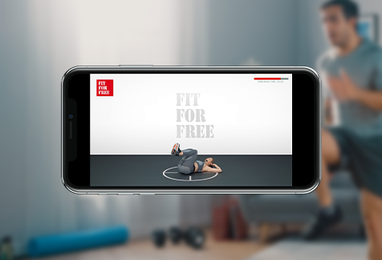
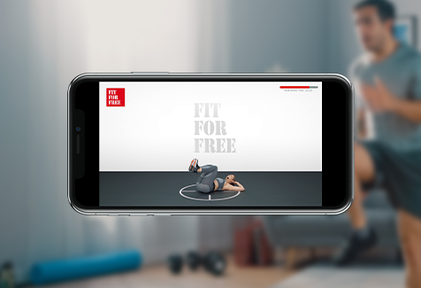

Fit For Free
Groepslessen
Groepslessen bij Fit For Free
Onder begeleiding van goed opgeleide en gecertificeerde instructeurs trainen? Dat kan in onze clubs met onze live groepslessen en small group trainingen.
Liever alleen of samen met vrienden virtual cycling lessen volgen? Dat kan ook in onze clubs! Én uiteraard begeleiden we je vanuit huis graag met onze online lessen uit de Fit For Free-app.
Elke Fit For Free-club is uniek op zijn manier. Check in de app welke groepslessen de club bij jou in de buurt aanbiedt.
Outdoor groepslessen
Buiten trainen is het helemaal: de wind door je haren, frisse lucht en alle ruimte om je work-out optimaal te benutten. Het Outdoor aanbod is breed: van BodyShape tot BBB en verschillende cardio opties.
Kom je ook lekker buiten buffelen? Check in de Fit For Free-app welke Outdoor lessen jouw club aanbiedt. En, je kunt ook eens op een andere locatie komen trainen. Vergeet niet: ook voor de Outdoor lessen heb je een reservering nodig.
Buiten trainen we ook verantwoord: tuurlijk houden we de 1,5 meter afstand en eventueel gebruikte materialen worden schoongemaakt. Natuurlijk ben je ook welkom in de club, maar in de buitenlucht trainen geeft weer een hele andere dimensie aan je sportroutine. Een echte aanrader, aldus onze trainers.
Kleed je je thuis alvast om? En neem een waterflesje mee. We zien je buiten!
Live groepslessen
Het verbeteren van je conditie, verbranden van calorieën of het opbouwen van spierkracht; met een groepsles die bij je past, werk je gericht aan je persoonlijke doel. Voor onze live groepslessen gebruiken we onder meer het wereldberoemde Les Mills-programma, waardoor je altijd deelneemt aan de allernieuwste groepslessen. De lessen zijn ingedeeld in vijf categorieën:


Small Group trainingen
Small Group trainingen (SGT) zijn workouts die gegeven worden in kleine groepjes, zodat je persoonlijke begeleiding en aandacht krijgt. De trainingen duren gemiddeld 30 minuten en zijn toegankelijk voor elk niveau.
Afhankelijk van de soort training worden deze gegeven in onze Functional Training Area of cardioruimte door een gecertificeerde fitnessinstructeur of personal trainer. Zij zorgen ervoor dat elke training dynamisch, intensief en uitdagend is, ongeacht het niveau.
Virtual cycling lessen
Ben je een fietsfanaat of wil je werken aan je conditie? Bij Fit For Free kan je onbeperkt deelnemen, ongeacht je abonnement, aan de virtual cycling lessen van CycleMasters®. Je kan kiezen uit deze drie lestypes:
Online lessen
In de uitgebreide bibliotheek van de Fit For Free-app vind je online lessen die aansluiten bij jouw voorkeuren en fitnessniveau. Allemaal uit te voeren vanuit huis met of zonder materialen.
 

Word lid van de club
Welk pakket je ook kiest, je hebt altijd onbeperkt toegang tot alle 92 Fit For Free-clubs van Nederland.